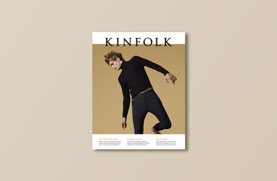
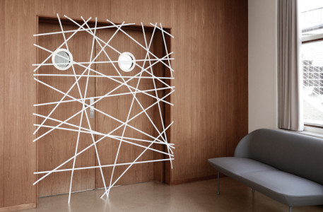

Issue Nineteen / Contents
Kinfolk Issue Nineteen: The Adrenaline Issue
Our spring edition explores our relationship with adrenaline and its vital contribution to our quality of life. After all, finding joy in knuckle-whitening moments can be enlivening, not immobilizing.
Read More
Issue Nineteen / Interview
A Day in the Life: Frida Escobedo
Whether it's a hotel, gallery or a public space, Mexican architect Frida Escobedo's work carries energy without adhering to one specific style.
Read More
Issue Nineteen / Essay
Keeping Tempo: Henrik Vibskov
From creating outlandish fashion shows to drumming in several bands, Henrik Vibskov keeps things unpredictable with his freestyle appraoch.
Read More

Issue Nineteen / Photo Essay
Prankster's Paradise
To even the playing field and invoke mirth for your co-worker, arrive at the office early to set up some of these dastardly deeds.
Read More